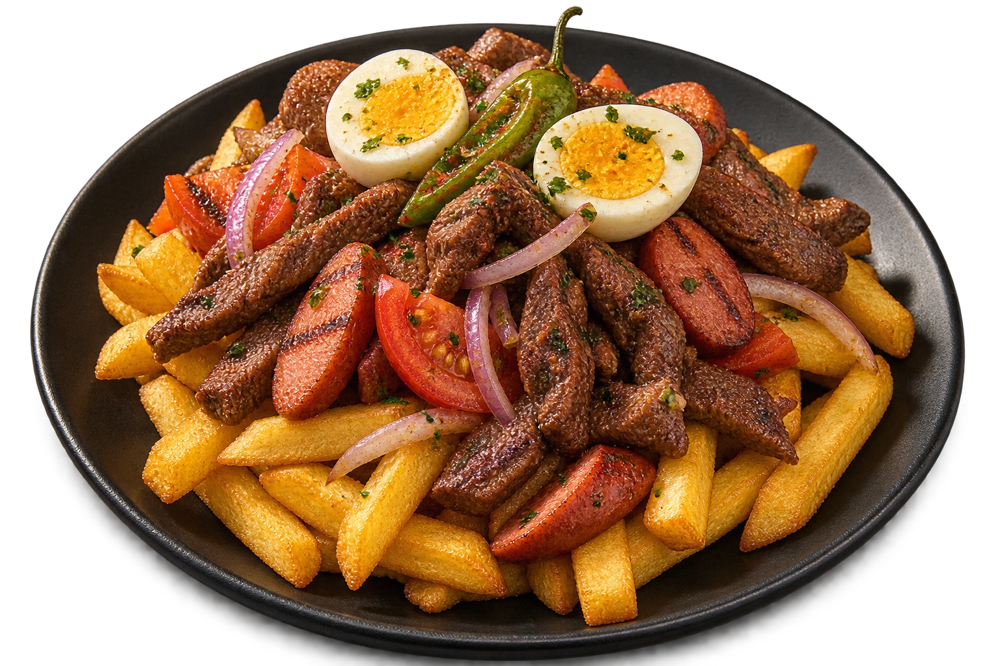

DE BOLIVIA. CON MUCHA ACTITUD.
BOLIVIA
EN CADA
BOCADO.
El picante, la brasa, la mesa llena.
Y esas ganas de volver a por más.
Encuentros en Bizkaia.

CON TODO EL SABOR.HECHO PARA
COMPARTIR ↗
01 / NUESTRA ESENCIA
NUESTRAS RAÍCES.
TU PRÓXIMO ANTOJO.
Hay sabores que no necesitan presentación. Solo una buena mesa.
Salteñas que abren el apetito, platos generosos y recetas que recorren el altiplano, los valles y el oriente boliviano. Una propuesta para descubrir, elegir y compartir sin prisa.
Encuentra tu favorito ↘02 / LA CARTA
EL ANTOJO
MANDA.
Del primer bocado a la última cucharada.
Explora nuestra propuesta boliviana.
Precios orientativos · fotos ilustrativas con IA.
No encontramos ese sabor.
Prueba otro nombre o cambia de categoría.
La selección calcula un presupuesto orientativo; no envía pedidos. Ingredientes, raciones, alérgenos y disponibilidad deben confirmarse con el restaurante.
EL MEJOR INGREDIENTE
SE VIENE
UN BUEN PLAN.
Hagamos un buen plan ↗03 / ABRE EL APETITO
MÍRALO.
IMAGÍNATE.
Una misma luz. Muchas formas de disfrutar.
Imágenes ilustrativas generadas con IA.
04 / TU PRÓXIMO ENCUENTRO
TU GENTE.
TU MESA.
TU MOMENTO.
Elige tu fecha y dinos cuántos venís.
La mesa queda pendiente hasta que el restaurante confirme disponibilidad.
05 / NOS VEMOS AQUÍ
AQUÍ HUELE
A ENCUENTRO.
Amaia Kalea, 2
48940, Bizkaia
Para disfrutar en el local o para llevar.
Sin reparto a domicilio. Horarios por confirmar.